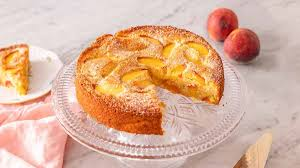

Summer Peach Cake

Description
This dish is a special one, to eat in the days
you are really thoughtful, when the childhood
memories come and all you can think is eating
a delicious bakedd good made by a loved one.
The taste is really simple, but especial.
Small, but big. Easy, but hard. You will enjoy
making (and eating) this one a lot!
Ingredients
- 6 tablespoons of softened unsalted butter
- 1 cup of flour
- 3 ripe peachs
- 3/4 teaspoon of ground nutmeg
- 1 cup of granulated sugar
- 1 large egg
- 1/2 cup of buttermilk
- 1/2 teaspoon of vanilla extract
- 1/4 teaspoon almond extract
- 1/2 cup almond flour
- 1 teaspoon baking powder
- 1/4 teaspoon baking soda
- 1 pinch turbinado sugar
Home